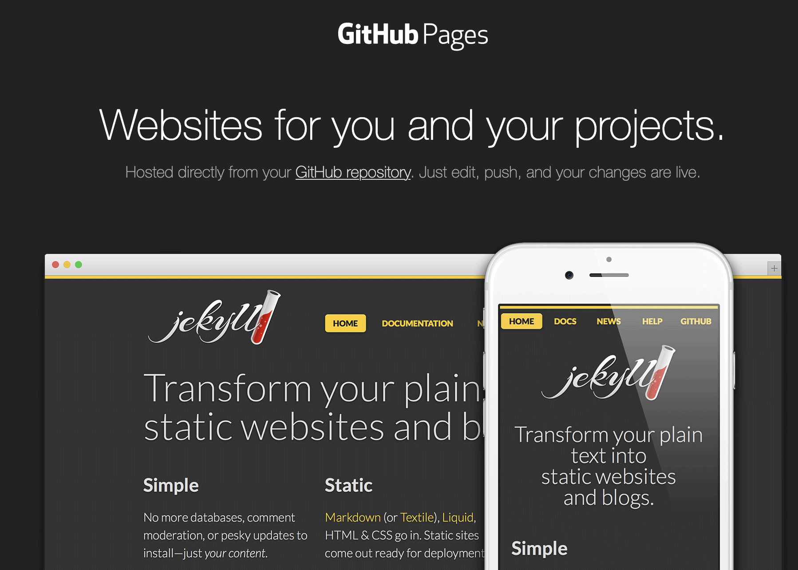

Ferramentas e Ambientes de Desenvolvimento
- Ferramentas e Ambientes de Desenvolvimento
- Editores de Código
- Browser Moderno
- Ferramentas de Desenvolvimento (DevTools)
- Servidor Web Local
- Gestão de Versões com Git e GitHub
- O que é Git?
- O que é GitHub?
- Benefícios de um Sistema de controlo de Versão
- Diferenças Entre Trabalho Local e Controlo de Versão
- Exemplo: Um Projeto de Design
- Github pages
- Fluxo de trabalho Básico do Git
- Comandos git para tarefas comuns
- Criar um repositório
- Ver o estado do repositório
- Estados possíveis de um ficheiro
- Fazer alterações
- Utilizando o Github Desktop
- Github Desktop
- Exercício para explorar o Git e o GitHub
- Referências úteis
Neste capítulo, vamos explorar as ferramentas e ambientes de desenvolvimento mais comuns usados na criação de websites. Estas ferramentas ajudam os autores a escrever, testar e depurar o código de forma eficiente e rápida. Uma boa configuração de ambiente é essencial para o sucesso de qualquer projeto web.
Editores de Código
Os editores de código são ferramentas essenciais para escrever e editar código-fonte. Alguns dos editores mais populares incluem:
- Visual Studio Code: Um editor leve e extensível com suporte a várias linguagens de programação.
- Sublime Text: Um editor rápido e poderoso com uma interface minimalista.
- Notepad++: Um editor simples e eficaz para Windows.
- … outros editors de código como Atom, Brackets, etc.
A recomendação é usar o Visual Studio Code, pois é amplamente adotado e possui uma vasta gama de extensões que facilitam o desenvolvimento web. Embora os exemplos apresentados neste curso sejam feitos no Visual Studio Code, os conceitos são aplicáveis a qualquer editor de código.
Browser Moderno
É importante usar um browser moderno para testar e depurar websites. Os browsers mais comuns incluem:
- Google Chrome: Um dos browsers mais populares, com excelentes ferramentas de desenvolvimento integradas.
- Mozilla Firefox: Outro browser popular, conhecido por sua privacidade e extensões.
- Microsoft Edge: O browser padrão do Windows, baseado no Chromium.
- Safari: O browser padrão do macOS e iOS, com bom suporte a padrões web.
A recomendação é usar o Google Chrome ou o Mozilla Firefox, pois ambos possuem ferramentas de desenvolvimento robustas que facilitam a depuração e o teste de websites.
Browser Mobile
Para testar a responsividade e o comportamento de websites em dispositivos móveis, é importante também usar um browser móvel. Os browsers móveis mais comuns incluem:
- Google Chrome para Android: Versão móvel do Chrome, com suporte a ferramentas de desenvolvimento.
- Mozilla Firefox para Android: Versão móvel do Firefox, com suporte a extensões e ferramentas de desenvolvimento.
- Safari para iOS: O browser padrão do iOS, com suporte a ferramentas de desenvolvimento.
- Microsoft Edge para Android: Versão móvel do Edge, com suporte a sincronização e ferramentas de desenvolvimento.
Ferramentas de Desenvolvimento (DevTools)

É importante também instalar as Ferramentas de Desenvolvimento (DevTools) do browser, que permitem inspecionar o código HTML, CSS e JavaScript, depurar erros e otimizar o desempenho do site. Estas ferramentas estão disponíveis em todos os browsers modernos.
Para abrir as DevTools, geralmente pode-se usar a tecla F12 ou clicar com o botão direito do mouse na página e selecionar “Inspecionar” ou “Inspecionar Elemento”.
No caso do Safari é necessário ativar as ferramentas de desenvolvimento nas preferências do browser. Vá a “Preferências” > “Avançado” e marque a opção “Mostrar menu Develop na barra de menus” ou “Show features for web developers”. Depois disso, você pode aceder as DevTools através do menu “Develop”.
Servidor Web Local
Para testar websites localmente, é útil configurar um servidor web local. Isso permite simular o ambiente de produção e testar recursos como requisições HTTP, APIs e interações com o servidor.

A melhor forma de correr um servidor web local para testar o seu website é usar o Live Server, uma extensão do Visual Studio Code que permite iniciar um servidor local com um clique.
Para instalar, basta procurar por “Live Server” na loja de extensões do Visual Studio Code e clicar em “Instalar”. Depois de instalado, pode iniciar o servidor clicando com o botão direito do rato no ficheiro HTML e selecionando “Open with Live Server”.
Gestão de Versões com Git e GitHub
A gestão de versões é uma prática essencial no desenvolvimento de software, permitindo registar alterações no código, colaborar com outros programadores e reverter mudanças quando necessário.
O Git é o sistema de controle de versão mais popular, e o GitHub é uma plataforma que hospeda repositórios Git e facilita a colaboração entre parceiros de um projeto.
Para além disso o GitHub oferece funcionalidades grátis como alojamento da página web do projeto, através do GitHub Pages, que permite publicar sites estáticos diretamente de um repositório GitHub.
A forma mais fácil de começar a usar o Git e o GitHub é através do GitHub Desktop, uma aplicação que permite gerir repositórios Git de forma gráfica e intuitiva.
Mas há uma diferença entre o Git e o GitHub:
O que é Git?
- O Git é um dos sistemas de controlo de versão mais populares:
- Distribuído: Cada colaborador tem uma cópia completa do repositório.
- Rápido: Opera localmente, o que significa que muitas operações não dependem da internet.
- Flexível: Suporta workflows variados para diferentes tipos de projeto.
O que é GitHub?
- O GitHub é uma plataforma online que utiliza Git para guardar repositórios.
- Tem funcionalidades como:
- Interface Gráfica: Mais amigável para iniciantes.
- Colaboração: Ferramentas para revisão de código, issues e pull requests.
- Portfólio: Hospedar projetos publicamente ou privadamente.
Benefícios de um Sistema de controlo de Versão
- Histórico de Versões
- Aceder a versões antigas de arquivos.
- Saber o que mudou, quando mudou e quem fez a alteração.
- Colaboração em Equipa
- Permite que múltiplas pessoas trabalhem no mesmo projeto sem sobrescrever o trabalho uns dos outros.
- Backup Seguro
- Como o código está armazenado num repositório, há backup garantido.
Diferenças Entre Trabalho Local e Controlo de Versão
| Trabalho Local (Sem VCS) | Com Controlo de Versão |
|---|---|
| Arquivos duplicados (“final”, “final-final”, “v2”, etc.) | Um único repositório gerencia tudo |
| Difícil de acompanhar alterações | Histórico detalhado de modificações |
| Colaboração manual (e-mails, drives) | Colaboração simplificada em tempo real |
Exemplo: Um Projeto de Design
- Imagine que está a criar uma página web para um cliente.
- Com um VCS:
- Pode guardar a evolução do logotipo sem criar múltiplos arquivos.
- Pode compartilhar com colegas, receber feedback e integrar alterações facilmente.
- Pode rastrear o trabalho realizado e manter um histórico de alterações.
- Pode colaborar com outros designers e programadores de forma eficiente.
Github pages

Fluxo de trabalho Básico do Git
- Clonar ou Inicializar um Repositório
- Fazer Alterações Locais
- Guardar Alterações (Commit)
- Sincronizar com o Repositório Remoto (Push e Pull)
- Rever e Integrar Trabalhos em Equipa (Merge e Pull Requests)
Comandos git para tarefas comuns
 {height=8cm}
{height=8cm}
Criar um repositório
criar um repositório vazio:
git init [nome do projeto]
clonar um repositório remoto
git clone URL_DO_REPO
Ver o estado do repositório
listar as alterações
git status
listar o registo total
git log
listar diferenças
git diff
Estados possíveis de um ficheiro
Os nossos ficheiros podem estar num de 3 estados
- modificado: quando acabamos de fazer uma alteração e gravamos o ficheiro.
- preparado: quando marcamos o ficheiro para ser submetido ao histórico do repositório [em lingo do git diz-se
staged] - confirmado: quando se registam os ficheiros
stagedno repositório [no lingo do git diz-secommited]
Fazer alterações
Marcar como preparado um ficheiro para ser adicionado ao repositório:
git add [ficheiro]
marcar [stage] todos os ficheiros como preparados
git add .
submeter ficheiros preparados [commit]
git commit -m "mensagem descritiva das alterações"
unstage (voltar ao estado modificado)
git reset [ficheiro]
unstage e perder alterações
git reset --hard
Utilizando o Github Desktop
Em alternativa à utilização do git diretamente no terminal, é possível utilizar a aplicação Github Desktop que permite realizar a maioria das tarefas do git e que permite integrar facilmente a conta do github.com
Github Desktop

Exercício para explorar o Git e o GitHub
Vamos criar um repositório no Github e criar uma pequena página pessoal de entrada.
- Criar uma conta no Github.
- Criar um repositório novo e dar-lhe um nome.
- Criar um ficheiro chamado index.html no repositório e editar com “Olá Mundo”.
- Fazer commit
- Nos settings ir à secção Github Pages e escolher o main branch
- Abrir o browser em http://[username].github.io/[nome_do_repositorio]
- Utilizar o Github Desktop para fazer um repositório clone local no vosso computador
- Fazer alterações ao ficheiro no repositório local.
- Fazer
commitepushe ver as alterações no repositório online.